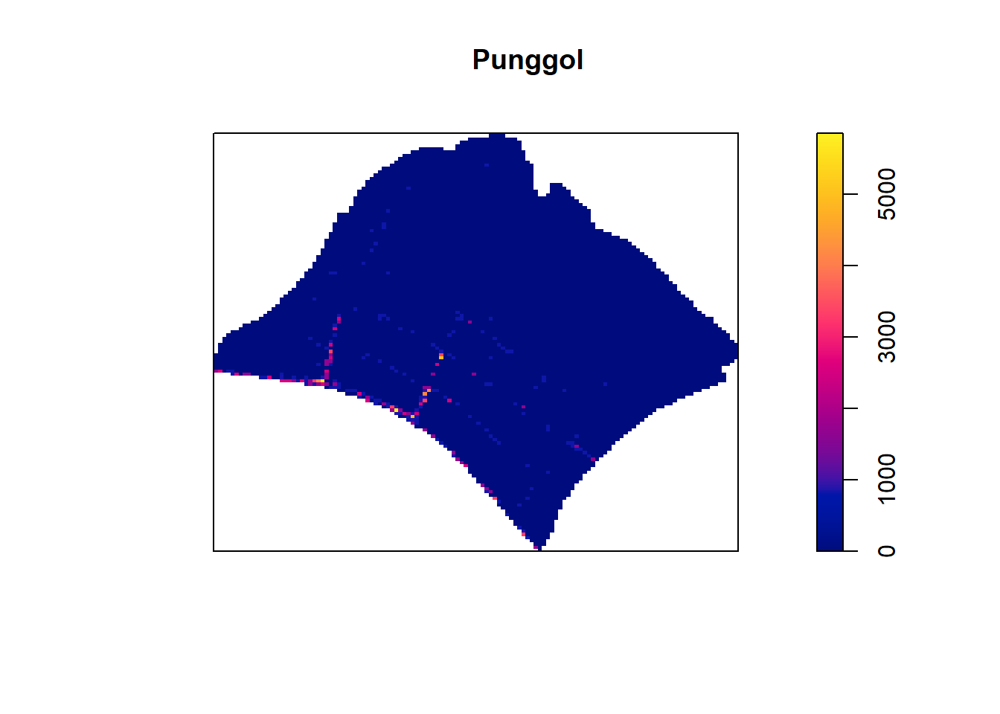

Code
pacman::p_load(sf, tmap, tidyverse, arrow, lubridate, spatstat, maptools, raster)Apply appropriate spatial point patterns analysis methods to discover the geographical and spatio-temporal distribution of Grab hailing services locations in Singapore.
Tasks Using appropriate function of sf and tidyverse, preparing the following geospatial data layer in sf tibble data.frames: Grab taxi location points either by origins or destinations. Road layer within Singapore excluding outer islands. Singapore boundary layer excluding outer islands Using the extracted data, derive traditional Kernel Density Estimation layers. Using the extracted data, derive either Network Kernel Density Estimation (NKDE) or Temporal Network Kernel Density Estimation (TNKDE) Using appropriate tmap functions, display the kernel density layers on openstreetmap of Singapore. Describe the spatial patterns revealed by the kernel density maps.
Data
The following data sets will be used in the analysis
pacman::p_load(sf, tmap, tidyverse, arrow, lubridate, spatstat, maptools, raster)df <- read_parquet("data/Apstial/GrabPosisi/part-00000-8bbff892-97d2-4011-9961-703e38972569.c000.snappy.parquet")Import Master Plan 2019 subzone Boundary (No Sea) Data
mpsz_sf <- st_read("data/Geospatial/MPSZ-2019", layer="MPSZ-2019")Reading layer `MPSZ-2019' from data source
`C:\j00b00\IS415-GAA\Take-home_EX\Take-home_Ex01\data\Geospatial\MPSZ-2019'
using driver `ESRI Shapefile'
Simple feature collection with 332 features and 6 fields
Geometry type: MULTIPOLYGON
Dimension: XY
Bounding box: xmin: 103.6057 ymin: 1.158699 xmax: 104.0885 ymax: 1.470775
Geodetic CRS: WGS 84Import Road data
roads <- st_read(dsn = "data/Geospatial/malaysia-singapore-brunei-latest-free", layer= "gis_osm_roads_free_1")Reading layer `gis_osm_roads_free_1' from data source
`C:\j00b00\IS415-GAA\Take-home_EX\Take-home_Ex01\data\Geospatial\malaysia-singapore-brunei-latest-free'
using driver `ESRI Shapefile'
Simple feature collection with 1759836 features and 10 fields
Geometry type: LINESTRING
Dimension: XY
Bounding box: xmin: 99.66041 ymin: 0.8021131 xmax: 119.2601 ymax: 7.514393
Geodetic CRS: WGS 84Pre-process and prepare data for analysis
Transform mpsz_sf from wgs84 to svy21
mpsz3414 <- st_transform(mpsz_sf, crs = 3414)
st_crs(mpsz3414)Coordinate Reference System:
User input: EPSG:3414
wkt:
PROJCRS["SVY21 / Singapore TM",
BASEGEOGCRS["SVY21",
DATUM["SVY21",
ELLIPSOID["WGS 84",6378137,298.257223563,
LENGTHUNIT["metre",1]]],
PRIMEM["Greenwich",0,
ANGLEUNIT["degree",0.0174532925199433]],
ID["EPSG",4757]],
CONVERSION["Singapore Transverse Mercator",
METHOD["Transverse Mercator",
ID["EPSG",9807]],
PARAMETER["Latitude of natural origin",1.36666666666667,
ANGLEUNIT["degree",0.0174532925199433],
ID["EPSG",8801]],
PARAMETER["Longitude of natural origin",103.833333333333,
ANGLEUNIT["degree",0.0174532925199433],
ID["EPSG",8802]],
PARAMETER["Scale factor at natural origin",1,
SCALEUNIT["unity",1],
ID["EPSG",8805]],
PARAMETER["False easting",28001.642,
LENGTHUNIT["metre",1],
ID["EPSG",8806]],
PARAMETER["False northing",38744.572,
LENGTHUNIT["metre",1],
ID["EPSG",8807]]],
CS[Cartesian,2],
AXIS["northing (N)",north,
ORDER[1],
LENGTHUNIT["metre",1]],
AXIS["easting (E)",east,
ORDER[2],
LENGTHUNIT["metre",1]],
USAGE[
SCOPE["Cadastre, engineering survey, topographic mapping."],
AREA["Singapore - onshore and offshore."],
BBOX[1.13,103.59,1.47,104.07]],
ID["EPSG",3414]]transform roads from wgs84 to svy21
roads3414 <- st_transform(roads, crs = 3414)
st_crs(roads3414)Coordinate Reference System:
User input: EPSG:3414
wkt:
PROJCRS["SVY21 / Singapore TM",
BASEGEOGCRS["SVY21",
DATUM["SVY21",
ELLIPSOID["WGS 84",6378137,298.257223563,
LENGTHUNIT["metre",1]]],
PRIMEM["Greenwich",0,
ANGLEUNIT["degree",0.0174532925199433]],
ID["EPSG",4757]],
CONVERSION["Singapore Transverse Mercator",
METHOD["Transverse Mercator",
ID["EPSG",9807]],
PARAMETER["Latitude of natural origin",1.36666666666667,
ANGLEUNIT["degree",0.0174532925199433],
ID["EPSG",8801]],
PARAMETER["Longitude of natural origin",103.833333333333,
ANGLEUNIT["degree",0.0174532925199433],
ID["EPSG",8802]],
PARAMETER["Scale factor at natural origin",1,
SCALEUNIT["unity",1],
ID["EPSG",8805]],
PARAMETER["False easting",28001.642,
LENGTHUNIT["metre",1],
ID["EPSG",8806]],
PARAMETER["False northing",38744.572,
LENGTHUNIT["metre",1],
ID["EPSG",8807]]],
CS[Cartesian,2],
AXIS["northing (N)",north,
ORDER[1],
LENGTHUNIT["metre",1]],
AXIS["easting (E)",east,
ORDER[2],
LENGTHUNIT["metre",1]],
USAGE[
SCOPE["Cadastre, engineering survey, topographic mapping."],
AREA["Singapore - onshore and offshore."],
BBOX[1.13,103.59,1.47,104.07]],
ID["EPSG",3414]]convert data type of pingtimestamp from character to date-time
df$pingtimestamp <- as_datetime(df$pingtimestamp)Grab taxi location points by origins.
origin_df <- df %>%
group_by(trj_id) %>%
arrange(desc(pingtimestamp)) %>%
filter(row_number()==1) %>%
mutate(weekday = wday(pingtimestamp, label=TRUE, abbr=TRUE),
start_hr = factor(hour(pingtimestamp)),
day = factor(mday(pingtimestamp)))origin_sf <- st_as_sf(origin_df,
coords = c("rawlng", "rawlat"),
crs = 4326) %>%
st_transform(crs = 3414)Grab taxi location points either by destinations.
destination_df <- df %>%
group_by(trj_id) %>%
arrange(pingtimestamp) %>%
filter(row_number()==1) %>%
mutate(weekday = wday(pingtimestamp, label=TRUE, abbr=TRUE),
end_hr = factor(hour(pingtimestamp)),
day = factor(mday(pingtimestamp)))destination_sf <- st_as_sf(destination_df,
coords = c("rawlng", "rawlat"),
crs = 4326) %>%
st_transform(crs = 3414)outer_island <- mpsz_sf[mpsz_sf$PLN_AREA_N == "SOUTHERN ISLANDS" | mpsz_sf$PLN_AREA_N == "NORTH-EASTERN ISLANDS" | mpsz_sf$PLN_AREA_N == "WESTERN ISLANDS",]plot(st_geometry(outer_island))
outer_island<- st_transform(outer_island, crs = 3414)main_island <- st_difference(st_union(mpsz3414),st_union(outer_island))plot(st_geometry(main_island))
main_road <- roads3414 %>% filter(maxspeed > 0)sg_roads <- st_intersection(main_road, main_island)tmap_mode("plot")
tm_shape(main_island) + tm_polygons() + tm_shape(sg_roads) + tm_lines()origin <- as_Spatial(origin_sf)mpsz <- as_Spatial(mpsz3414)main_island <- as_Spatial(main_island)sg_roads <- as_Spatial(sg_roads)origin_sp <- as(origin, "SpatialPoints")main_island_sp <- as(main_island, "SpatialPolygons")sg_roads_sp <- as(sg_roads, "SpatialLines")origin_spclass : SpatialPoints
features : 28000
extent : 3638.685, 50024.92, 25350.05, 49469.41 (xmin, xmax, ymin, ymax)
crs : +proj=tmerc +lat_0=1.36666666666667 +lon_0=103.833333333333 +k=1 +x_0=28001.642 +y_0=38744.572 +ellps=WGS84 +towgs84=0,0,0,0,0,0,0 +units=m +no_defs origin_ppp <- as(origin_sp, "ppp")plot(origin_ppp)summary(origin_ppp)Planar point pattern: 28000 points
Average intensity 2.502667e-05 points per square unit
Coordinates are given to 3 decimal places
i.e. rounded to the nearest multiple of 0.001 units
Window: rectangle = [3638.69, 50024.92] x [25350.05, 49469.41] units
(46390 x 24120 units)
Window area = 1118810000 square unitsHandling Duplicate Point
any(duplicated(origin_ppp))[1] FALSECreating owin object
main_island_owin <- as(main_island, "owin")plot(main_island_owin)summary(main_island_owin)Window: polygonal boundary
37 separate polygons (29 holes)
vertices area relative.area
polygon 1 71 5.63061e+03 8.47e-06
polygon 2 10 1.99717e+02 3.01e-07
polygon 3 12667 6.63014e+08 9.98e-01
polygon 4 (hole) 3 -3.41897e-05 -5.14e-14
polygon 5 (hole) 23 -1.99656e+01 -3.00e-08
polygon 6 (hole) 35 -1.38385e+02 -2.08e-07
polygon 7 (hole) 19 -4.39650e+00 -6.62e-09
polygon 8 (hole) 270 -1.21455e+03 -1.83e-06
polygon 9 (hole) 3 -4.95057e-02 -7.45e-11
polygon 10 (hole) 3 -3.65499e-03 -5.50e-12
polygon 11 (hole) 38 -7.79904e+03 -1.17e-05
polygon 12 (hole) 3 -5.99535e-04 -9.02e-13
polygon 13 (hole) 3 -3.04561e-04 -4.58e-13
polygon 14 (hole) 3 -7.43616e-06 -1.12e-14
polygon 15 (hole) 6 -8.37554e-01 -1.26e-09
polygon 16 (hole) 4 -2.86396e-01 -4.31e-10
polygon 17 (hole) 3 -1.81439e-04 -2.73e-13
polygon 18 (hole) 3 -8.68789e-04 -1.31e-12
polygon 19 (hole) 3 -4.46076e-04 -6.71e-13
polygon 20 (hole) 3 -3.39794e-04 -5.11e-13
polygon 21 (hole) 317 -5.11280e+04 -7.69e-05
polygon 22 (hole) 5 -2.92235e-04 -4.40e-13
polygon 23 (hole) 3 -4.52043e-05 -6.80e-14
polygon 24 (hole) 3 -3.90173e-05 -5.87e-14
polygon 25 (hole) 5 -2.44411e-04 -3.68e-13
polygon 26 (hole) 4 -2.18616e-04 -3.29e-13
polygon 27 (hole) 4 -4.28453e-01 -6.45e-10
polygon 28 (hole) 4 -2.54488e-04 -3.83e-13
polygon 29 (hole) 3 -9.59850e-05 -1.44e-13
polygon 30 (hole) 41 -4.01660e+04 -6.04e-05
polygon 31 (hole) 3 -4.14099e-04 -6.23e-13
polygon 32 (hole) 5 -3.64686e-02 -5.49e-11
polygon 33 30 2.80002e+04 4.21e-05
polygon 34 27 1.50315e+04 2.26e-05
polygon 35 285 1.61128e+06 2.42e-03
polygon 36 91 1.49663e+04 2.25e-05
polygon 37 71 8.18750e+03 1.23e-05
enclosing rectangle: [2667.54, 55941.94] x [21448.47, 50256.33] units
(53270 x 28810 units)
Window area = 664597000 square units
Fraction of frame area: 0.433originSG_ppp = origin_ppp[main_island_owin]summary(originSG_ppp)Planar point pattern: 27821 points
Average intensity 4.186147e-05 points per square unit
Coordinates are given to 3 decimal places
i.e. rounded to the nearest multiple of 0.001 units
Window: polygonal boundary
37 separate polygons (29 holes)
vertices area relative.area
polygon 1 71 5.63061e+03 8.47e-06
polygon 2 10 1.99717e+02 3.01e-07
polygon 3 12667 6.63014e+08 9.98e-01
polygon 4 (hole) 3 -3.41897e-05 -5.14e-14
polygon 5 (hole) 23 -1.99656e+01 -3.00e-08
polygon 6 (hole) 35 -1.38385e+02 -2.08e-07
polygon 7 (hole) 19 -4.39650e+00 -6.62e-09
polygon 8 (hole) 270 -1.21455e+03 -1.83e-06
polygon 9 (hole) 3 -4.95057e-02 -7.45e-11
polygon 10 (hole) 3 -3.65499e-03 -5.50e-12
polygon 11 (hole) 38 -7.79904e+03 -1.17e-05
polygon 12 (hole) 3 -5.99535e-04 -9.02e-13
polygon 13 (hole) 3 -3.04561e-04 -4.58e-13
polygon 14 (hole) 3 -7.43616e-06 -1.12e-14
polygon 15 (hole) 6 -8.37554e-01 -1.26e-09
polygon 16 (hole) 4 -2.86396e-01 -4.31e-10
polygon 17 (hole) 3 -1.81439e-04 -2.73e-13
polygon 18 (hole) 3 -8.68789e-04 -1.31e-12
polygon 19 (hole) 3 -4.46076e-04 -6.71e-13
polygon 20 (hole) 3 -3.39794e-04 -5.11e-13
polygon 21 (hole) 317 -5.11280e+04 -7.69e-05
polygon 22 (hole) 5 -2.92235e-04 -4.40e-13
polygon 23 (hole) 3 -4.52043e-05 -6.80e-14
polygon 24 (hole) 3 -3.90173e-05 -5.87e-14
polygon 25 (hole) 5 -2.44411e-04 -3.68e-13
polygon 26 (hole) 4 -2.18616e-04 -3.29e-13
polygon 27 (hole) 4 -4.28453e-01 -6.45e-10
polygon 28 (hole) 4 -2.54488e-04 -3.83e-13
polygon 29 (hole) 3 -9.59850e-05 -1.44e-13
polygon 30 (hole) 41 -4.01660e+04 -6.04e-05
polygon 31 (hole) 3 -4.14099e-04 -6.23e-13
polygon 32 (hole) 5 -3.64686e-02 -5.49e-11
polygon 33 30 2.80002e+04 4.21e-05
polygon 34 27 1.50315e+04 2.26e-05
polygon 35 285 1.61128e+06 2.42e-03
polygon 36 91 1.49663e+04 2.25e-05
polygon 37 71 8.18750e+03 1.23e-05
enclosing rectangle: [2667.54, 55941.94] x [21448.47, 50256.33] units
(53270 x 28810 units)
Window area = 664597000 square units
Fraction of frame area: 0.433plot(originSG_ppp)bw <- bw.diggle(originSG_ppp)
bw sigma
10.79262 originSG_ppp.km <- rescale(originSG_ppp, 1000, "km")kde_originSG.bw = density(originSG_ppp.km, sigma=bw, edge = TRUE, kernel="gaussian")plot(kde_originSG.bw)kde_originSG_ppp_fixed <- density(originSG_ppp.km, sigma=bw, edge=TRUE, kernel="gaussian")
plot(kde_originSG_ppp_fixed)Computing KDE by using fixed bandwidth
kde_originSG_ppp_adaptive <- adaptive.density(originSG_ppp.km, method="kernel")
plot(kde_originSG_ppp_adaptive)Converting KDE output into grid object
gridded_kde_originSG_bw <- as.SpatialGridDataFrame.im(kde_originSG.bw)
spplot(gridded_kde_originSG_bw)Converting gridded output into raster
kde_originSG_bw_raster <- raster(gridded_kde_originSG_bw)kde_originSG_bw_rasterclass : RasterLayer
dimensions : 128, 128, 16384 (nrow, ncol, ncell)
resolution : 0.4162063, 0.2250614 (x, y)
extent : 2.667538, 55.94194, 21.44847, 50.25633 (xmin, xmax, ymin, ymax)
crs : NA
source : memory
names : v
values : 17.21277, 59.16054 (min, max)projection(kde_originSG_bw_raster) <- CRS("+init=EPSG:3414")
kde_originSG_bw_rasterclass : RasterLayer
dimensions : 128, 128, 16384 (nrow, ncol, ncell)
resolution : 0.4162063, 0.2250614 (x, y)
extent : 2.667538, 55.94194, 21.44847, 50.25633 (xmin, xmax, ymin, ymax)
crs : +proj=tmerc +lat_0=1.36666666666667 +lon_0=103.833333333333 +k=1 +x_0=28001.642 +y_0=38744.572 +ellps=WGS84 +units=m +no_defs
source : memory
names : v
values : 17.21277, 59.16054 (min, max)tm_shape(kde_originSG_bw_raster) + tm_raster("v") +
tm_layout(legend.position = c("right", "bottom"),frame = FALSE)